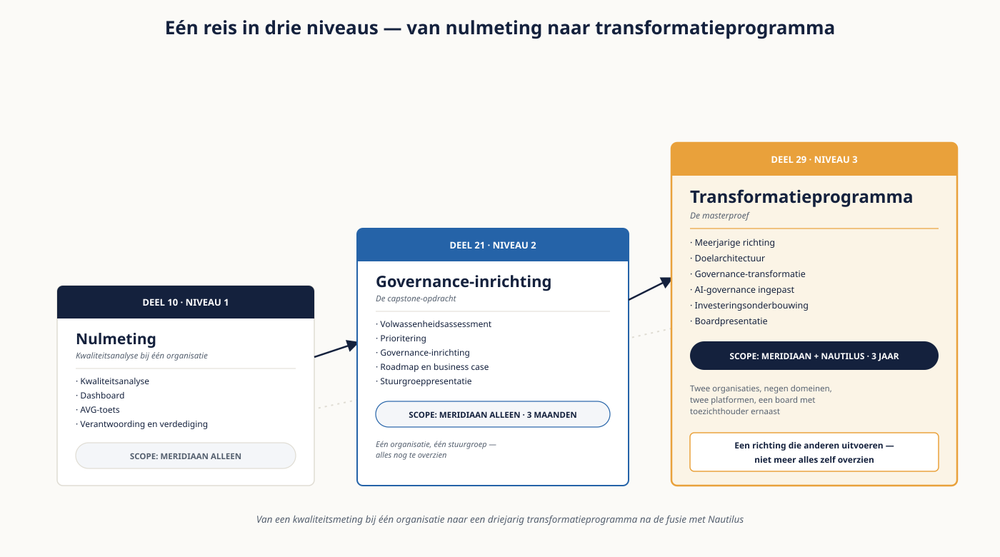

Deel 29 — Masterproef — het transformatieprogramma
Niveau 3 — Meesterschap · Reader
Voorbereiding, geen vervanging
Deze cursusmap is onafhankelijk ontwikkeld door Ductus B.V. Ductus is niet gelieerd aan, geaccrediteerd door of goedgekeurd door DAMA International, IIBA, IAPP, de EDM Association of Microsoft.
Dit materiaal bereidt voor op de genoemde examens en vervangt het officiële examenmateriaal niet. Bodies of knowledge, handboeken en examenblueprints worden hier niet gereproduceerd; deelnemers schaffen die bronnen zelf aan.
Alle genoemde merken zijn eigendom van hun respectieve houders. Examengegevens gecontroleerd in augustus 2026 — verifieer vóór inschrijving bij de bron.
1. Wat de masterproef is
De capstone van niveau 2 was een opdracht: één organisatie, één stuurgroep, drie maanden. Dit is een programma: twee samengevoegde organisaties, negen domeinen, twee platformen, twaalf AI-toepassingen, een board met een toezichthouder ernaast, en een horizon van drie jaar.
Het verschil is niet de omvang maar de aard van de opgave. Bij een opdracht kun je alles zelf overzien; bij een programma niet. Je levert dus geen plan dat je uitvoert, maar een richting die anderen kunnen uitvoeren, met keuzes die standhouden als de omstandigheden veranderen — en dat gebeuren ze.
Wat je aantoont
- Dat je een meerjarige richting kunt formuleren die niet afhangt van aannames die volgend jaar sneuvelen.
- Dat je een doelarchitectuur kunt neerzetten die de fusie afmaakt in plaats van hem te bevriezen.
- Dat je een governance-transformatie kunt ontwerpen die zonder programma blijft werken.
- Dat je AI-governance kunt inpassen zonder een tweede structuur op te tuigen.
- Dat je de investering kunt onderbouwen op de grootheid die dit board weegt.
- Dat je dit alles kunt verdedigen tegenover mensen die er tegengestelde belangen bij hebben.
2. De opgave
Het is jaar drie na de fusieaankondiging. De juridische fusie is voltrokken, de architectuurkeuzes uit deel 22 zijn genomen, het platform uit deel 23 is gekozen, en de governance uit deel 25 draait — met de stagnatie die je daar hebt gevonden nog niet opgelost. De DCAM-meting uit deel 24 ligt op tafel. De waarderingsvraag uit deel 26 is beantwoord. De twaalf AI-toepassingen uit deel 27 zijn geïnventariseerd en negen ervan zijn nog niet door een poort gegaan.
De board vraagt om één samenhangend programmavoorstel voor drie jaar. Er zijn drie randvoorwaarden en één complicatie.
| Wat er is gesteld | |
|---|---|
| Randvoorwaarde 1 | Het programma past binnen de bestaande governancestructuur. Geen nieuw gremium, geen nieuw office. |
| Randvoorwaarde 2 | Er is één zichtbare uitkomst per jaar die de toezichthouder aangaat. |
| Randvoorwaarde 3 | De coëxistentie van de twee platformen eindigt binnen de programmaperiode. |
| Complicatie | Het fusiebudget is overschreden. De board heeft laten weten dat er dit jaar geen extra middelen komen en dat het programma binnen de bestaande formatie moet worden gedragen. |
De complicatie is de opgave
Een programma van drie jaar binnen de bestaande formatie is niet hetzelfde programma als met extra middelen. Wie de complicatie behandelt als een beperking waar je omheen moet, levert een voorstel dat niet uitvoerbaar is. Wie hem behandelt als ontwerpuitgangspunt, komt uit bij een ander en kleiner programma — en dat is het antwoord dat wordt gevraagd.

3. Deliverable 1 — de meerjarige richting
- Maximaal twee pagina’s. Waar staat de organisatie over drie jaar, in termen van wat zij dan kan en nu niet.
- Drie tot vijf uitkomsten, elk toetsbaar. Geen ambities maar uitkomsten: "één deelnemersbeeld over beide portefeuilles" is toetsbaar, "datagedreven werken" niet.
- Per uitkomst: waarom deze, en wat er misgaat als hij uitblijft.
- De aannames waarop de richting rust, apart benoemd — en per aanname wat er verandert als hij sneuvelt.
- Wat er expliciet níét in het programma zit, en waarom.
Het laatste punt is bij een meerjarig programma zwaarder dan bij een opdracht. Een programma zonder afgebakende buitenkant groeit, en groeit vooral in het tweede jaar wanneer de aandacht van de board is verschoven.
4. Deliverable 2 — de doelarchitectuur
- Eén plaat plus maximaal drie pagina’s toelichting.
- De domeinindeling van de gefuseerde organisatie, met per domein de bron van waarheid.
- Het einde van de coëxistentie: welk platform blijft, wanneer, en onder welke voorwaarde.
- De architectuurprincipes die gelden, maximaal acht, met de tegenspraken uit deel 22 beslecht.
- De besluitregistraties voor de drie zwaarste keuzes.
- De migratiestrategie per keten, met het verplaatste risico benoemd.
- Wat er in de tussenperiode geldt: welke afspraken houden de twee platformen bij elkaar tot de coëxistentie eindigt?
Het laatste punt wordt in doelarchitecturen structureel overgeslagen: men beschrijft de eindsituatie en laat de weg ernaartoe aan de uitvoering. Bij achttien maanden coëxistentie is die weg de helft van de programmaperiode.
5. Deliverable 3 — de governance-transformatie
- Maximaal drie pagina’s.
- De weg van de huidige inrichting naar federatief, met het moment waarop die overgang plaatsvindt en de voorwaarde die dan vervuld moet zijn.
- De oplossing voor de stagnatie die je in deel 25 hebt gevonden, met een ingreep die bij het besluitrecht aangrijpt en niet bij de meting.
- De stewardship-inrichting voor negen domeinen, met opleidingslijn en opvolgingsafspraak.
- De verdeling tussen wat je automatiseert en wat menselijke beoordeling blijft, met de borging van het tweede.
- De KPI- en OKR-set voor drie jaar, met per jaar één doel en drie resultaten.
- De cultuurinterventie, met de maatregel die voorkomt dat zij als afrekening werkt.
Toon aan dat je netto nul gremia toevoegt. Dat is randvoorwaarde 1 en het is bij negen domeinen lastiger dan bij vijf — maar het is haalbaar, en het is een beoordeeld punt.
6. Deliverable 4 — AI-governance ingepast
- Maximaal twee pagina’s.
- Het gate-proces met drie poorten, ingepast in de besluitrechtenmatrix.
- De aanpak voor de negen toepassingen die al draaien zonder poort: geprioriteerd op risico, niet allemaal tegelijk.
- De validatiefunctie, met capaciteit — en die capaciteit komt uit de bestaande formatie.
- De derde poort, ontworpen zodat hij zichzelf afdwingt.
- De verhouding tot de datagovernance: welke vragen liggen waar.
Dit is de deliverable waarin de complicatie het meest bijt. Een validatiefunctie zonder capaciteit is een naam, en er komt geen formatie bij. De verdedigbare antwoorden lopen dus via herprioritering, via een deeltijdrol met vastgelegde uren, of via een expliciete keuze om minder toepassingen toe te laten totdat er capaciteit is. Alle drie zijn te verdedigen; niets doen niet.
7. Deliverable 5 — de investering
- Maximaal twee pagina’s.
- De grootheid die dit board weegt, met de verantwoording waarom die het is.
- De kosten in fte en euro’s, met de expliciete uitspraak dat het binnen de formatie past — en wat er dan níét meer gebeurt.
- De opbrengst, met interne efficiëntie meegeteld en de aannames apart zichtbaar.
- Het risico dat niet in geld is uit te drukken, inclusief de toezichtskant.
- Wat het einde van de coëxistentie oplevert, en wanneer.
- Een eerlijke terugverdientijd.
De tweede regel is de kern. Binnen de bestaande formatie werken betekent dat er iets anders niet gebeurt. Wie dat niet benoemt, levert een voorstel waarin de capaciteit twee keer is belegd — en dat wordt in het eerste kwartaal zichtbaar.
8. Deliverable 6 — de boardpresentatie
Maximaal twaalf slides, twintig minuten, gevolgd door twintig minuten vragen van een board dat de rollen speelt van de CEO, de CFO, de directeur Beleggingen, en een commissaris met een toezichtsachtergrond.
Opbouw
- Waar staan we: feiten, inclusief de DCAM-uitkomst en de stagnatie.
- Waar moeten we heen, en waarom: de drie tot vijf uitkomsten.
- Wat dat vraagt: architectuur, governance, AI, in hoofdlijnen.
- Wat het kost, en wat er daardoor niet gebeurt.
- De zichtbare uitkomst per jaar, met de toezichtsrelevantie.
- De aannames en wat er verandert als ze sneuvelen.
- Wat er níét in het programma zit.
- Het gevraagde besluit: wat, van wie, vóór wanneer, en wat er gebeurt bij nee.
Vragen waarop je je voorbereidt
- "Wij hebben net een fusie betaald. Waarom nu dit?" — de CFO.
- "Wat levert dit mijn domein op?" — de directeur Beleggingen, opnieuw, en nu met minder geduld.
- "Kunt u dit binnen de formatie? Wie gaat er dan minder doen?" — de CEO.
- "Wat zegt de toezichthouder hierover, en wat als hij het niet genoeg vindt?" — de commissaris.
- "Wat gebeurt er als wij dit voorstel afwijzen?"
9. Hoe je wordt beoordeeld
De rubric is vooraf bekend. Per onderdeel gelden drie niveaus; voldoende op alle zes rondt niveau 3 af.
| Onderdeel | Voldoende | Goed | Uitmuntend |
|---|---|---|---|
| Richting | Drie tot vijf toetsbare uitkomsten | Plus de aannames apart benoemd | Plus per aanname wat er verandert als hij sneuvelt |
| Doelarchitectuur | Domeinen met bron van waarheid, principes beslecht | Plus besluitregistraties en migratiestrategie per keten | Plus de afspraken die de tussenperiode overbruggen |
| Governance | De weg naar federatief met een voorwaarde | Plus de stagnatie-ingreep bij het besluitrecht | Plus netto nul gremia aantoonbaar, en de opvolgingsafspraak |
| AI-governance | Gate-proces ingepast in de matrix | Plus een geprioriteerde aanpak voor de negen bestaande | Plus een derde poort die zichzelf afdwingt, met capaciteit uit de formatie |
| Investering | Kosten en opbrengst met aannames | Plus de juiste grootheid en het niet-financiële risico | Plus expliciet wat er níét meer gebeurt binnen de formatie |
| Presentatie | Twaalf slides, structuur helder, tijd gehaald | Plus kritische vragen inhoudelijk beantwoord | Plus het gevraagde besluit verdedigd onder tegengestelde belangen |
Onvoldoende op één onderdeel betekent dat je dat onderdeel opnieuw levert. Onvoldoende op de presentatie betekent een tweede sessie — de verdediging is op dit niveau geen formaliteit maar de helft van de beoordeling.
10. Zes fouten die masterproeven verzwakken
- De complicatie behandelen als beperking waar je omheen moet in plaats van als ontwerpuitgangspunt.
- Uitkomsten formuleren die niet toetsbaar zijn.
- Een doelarchitectuur zonder de afspraken voor de tussenperiode.
- De stagnatie uit deel 25 aanpakken bij de meting in plaats van bij het besluitrecht.
- Een validatiefunctie beleggen zonder te zeggen waar de capaciteit vandaan komt.
- Niet benoemen wat er níét meer gebeurt als het programma binnen de formatie moet.
11. Na de masterproef
Het portfoliostuk
Bewaar de volledige masterproef inclusief de boardvragen en de uitkomst. Dit is het zwaarste stuk in je ervaringsdossier: het bevat een meerjarige richting, een architectuur, een governance-ontwerp, een investeringsonderbouwing en een verdediging onder tegengestelde belangen. Bij de ervaringsbeoordeling voor Master is dat het stuk waarop een beoordelaar het langst blijft kijken.
De certificeringsroute
- Master vraagt tachtig procent op drie examens plus de ervaringsbeoordeling. Je planning uit deel 28 bepaalt wanneer.
- DCAM is een aparte route via de EDM Association, en het examen plan je ná een volledig assessment.
- De AIGP staat er los van en veroudert het snelst; controleer de actuele stof vóór inschrijving.
- Bewaar al je scorerapporten en zet de hercertificeringsherinneringen in je agenda. Verlengingen vergeten is de meest voorkomende manier waarop mensen hun titel verliezen.
En dan
Dit is het einde van de cursus en niet van het vak. Wat je hier hebt geleerd, verandert: de raamwerken worden herzien, de regelgeving rond AI is nog in beweging, en de paradigma’s van deel 23 zijn over vijf jaar deels vervangen. Wat niet verandert, is het onderliggende werk — betekenis vastleggen, herkomst kunnen aantonen, besluiten beleggen, en eerlijk zijn over wat je niet weet. Dat is negenentwintig delen lang de rode draad geweest, en het is wat overblijft als de rest is verouderd.
Studiemateriaal bij dit deel
Er komt geen nieuwe stof bij. Alle kaders staan in de readers van deel 22 tot en met 28.
Voor de examens: de DAMA-DMBOK2 Revised Edition, het DCAM-framework via het Knowledge Portal van de EDM Association, en de body of knowledge van IAPP voor de AIGP.
Examenopzet, eisen en inschrijving: cdmp.info, dama.org, edmcouncil.org en iapp.org.
Dit materiaal reproduceert geen van deze bronnen en vervangt ze niet. Ductus is geen geaccrediteerde aanbieder van enig certificeringsschema.